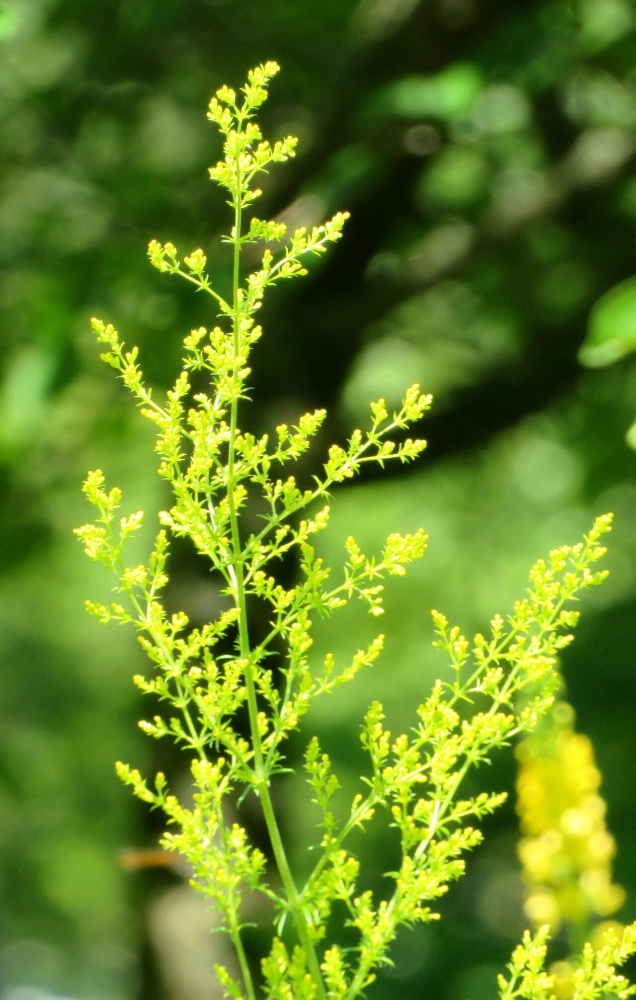
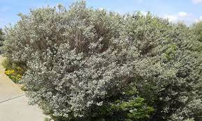
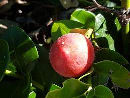

Edible Plants of Africa
Indigenous Edible Plants Found in South Africa
African wormwood. Has a strong flavor and is widley used in cocktails and iced teas.

confetti bush. The confetti bush is commonly used as a deodoriser, but can be used in many dishs for flavoring

Carissa Macrocarpa. The carrissa macrocarpa grows vitamine c rich berries and is used in jams and presevres

Yams. perennial herbaceous vines, good for growing in temperate and tropical regions. commonly used for food